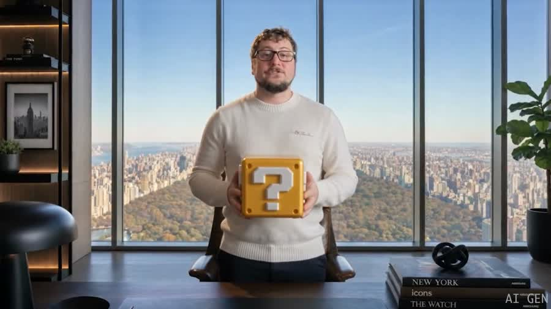
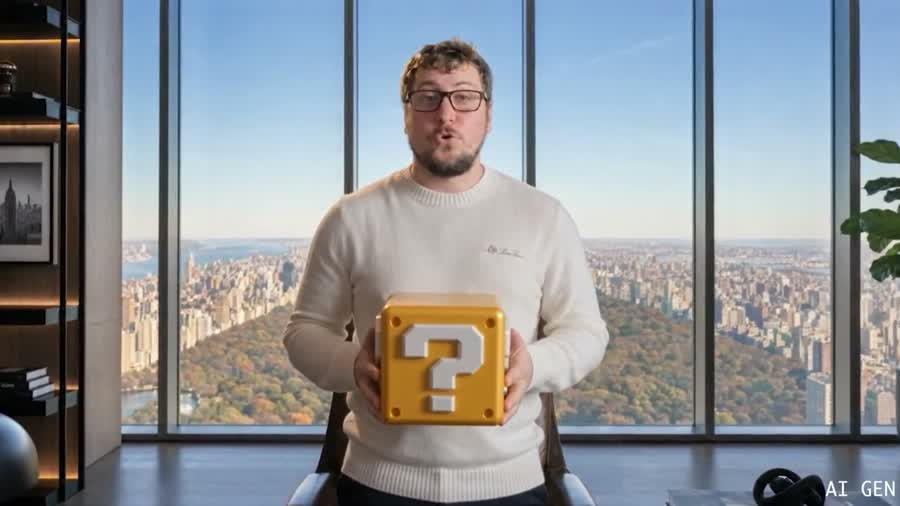
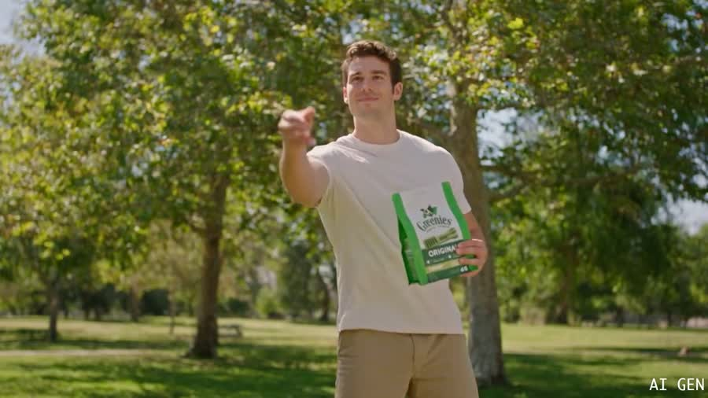
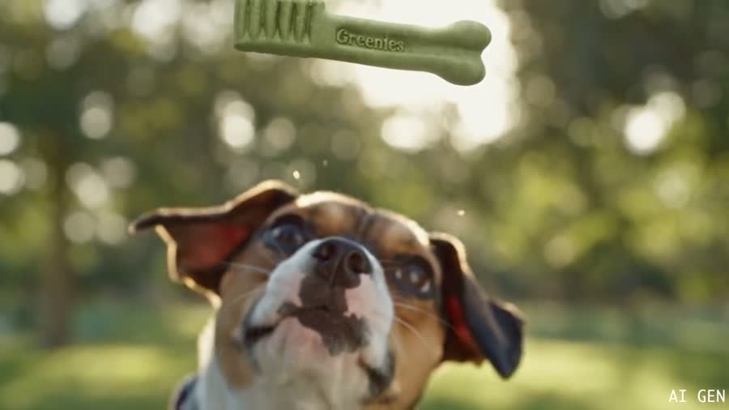
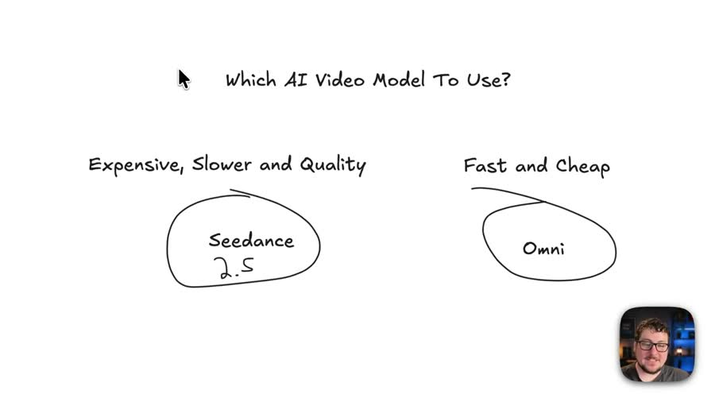
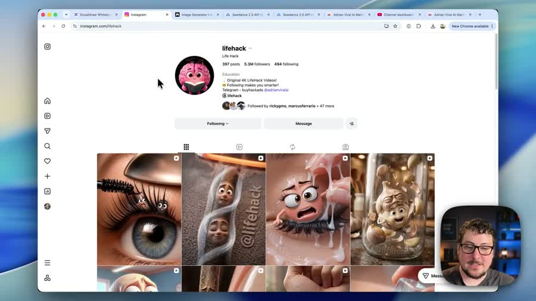
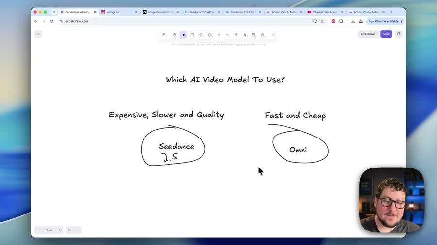
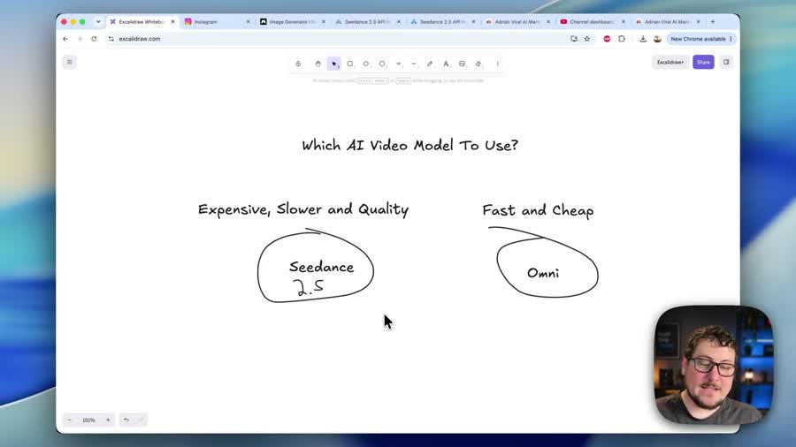
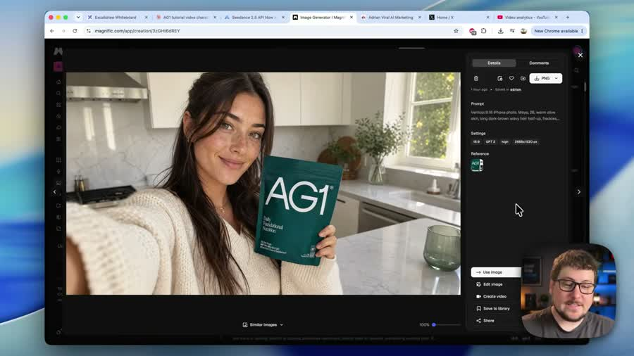

Разбор интро: Adrian, «Реклама товара через нейросеть SeeDance 2.5»
Автор — Эдриан, ведёт англоязычный YouTube-канал про создание рекламы нейросетями.
Ролик о том, как сделать рекламный ролик товара с помощью SeeDance 2.5 — программы,
которая рисует видео по текстовому описанию. Разбирается только интро — первый блок,
где автор ещё не учит, а удерживает зрителя.
Граница интро — 0:59. На 0:51 автор впервые появляется в кадре в роли героя
рекламы: «Okay. Day one of AG1» — это уже не рассказ, а показ готового результата.
На 0:59 звучит «We're gonna start this video with the format of UGC realistic video» —
переключатель: начинается первый способ. Дальше идёт объяснение по шагам.
Ролик английский. Под каждой мыслью три слоя: оригинал мелкой строкой,
дословный перевод и сильный русский — тот же ход, переписанный так,
как он работал бы в посте.
Фрагмент — первые 66 секунд ролика. Таймкоды кликабельны: перематывают плеер.
2. Паспорт интро
0:59
длина интро
в пределах нормы 60–90 с
8
склеек
из них три подряд на 11–13 секунде
7,4 с
средний план
в плотных интро 2–4 с — вдвое спокойнее
143
слова в минуту
норма английской речи ~150 — говорит размеренно
140
слов всего
за 59 секунд
5
мыслей
законченных смысловых блока
9 с
пауза после крючка
заставка канала между обещанием и знакомством
Главная особенность в цифрах: 143 слова в минуту — самый спокойный темп в базе.
Для сравнения: в разборе про порядок в файлах автор гонит 244 слова в минуту, у Гребенюка 179.
Здесь речь звучит почти как разговорная. Это возможно потому, что внимание держится
не темпом, а картинкой: почти весь показ занимают готовые ролики, которые он же и сделал.
3. Цепочка ходов
Крючок до заставки→Заставка канала→Знакомство + авторитет цифрами→Развилка: два инструмента→Ставка на один→Показ результата живьём→Переключатель на первый способ
Отличий от остальных роликов базы два. Первое: крючок стоит до заставки. Девять секунд
обещания, потом фирменная заставка канала, и только затем знакомство. Приём из
телевидения — «холодное открытие». Второе: авторитет подан цифрами дважды подряд —
миллионы долларов на рекламу и 1,2 миллиарда просмотров. Такого нет ни у кого больше
в базе, кроме Гребенюка.
SeeDance 2.5 is a breakthrough in AI video technology, and I'm gonna show you how to use it to create killer ads for your product.
SeeDance 2.5 — это прорыв в технологии искусственного интеллекта для видео, и я собираюсь показать вам, как использовать это, чтобы создавать убойную рекламу для вашего товара.
25,0 слов в предложении · 25 слов / 1 предложение
Сильный русский
Рекламный ролик для товара. Актриса, кухня, свет, монтаж.
Снимали не камерой. Это нарисовала программа по описанию текстом.
Показываю, как сделать такой же.
5,4 слова в предложении · 27 слов / 5 предложений

0:01 — первый кадр: девушка на кухне держит банку с добавкой. Выглядит как обычная реклама, снятая на камеру.

0:06 — тот же ролик продолжается. Зритель ещё не знает, что это нарисовано, — и в этом весь приём.
Девять секунд без слов: фирменная заставка канала, три склейки подряд.
—
Что тут происходит
Крючок отработал, зритель зацеплен — можно ставить заставку.
Приём из телевидения: сначала самое интересное, потом название передачи.
Приём: «холодное открытие»

0:12 — заставка канала: название и рубрика на светлом фоне.

0:15 — заставка сменяется рабочим окном. Дальше пойдёт знакомство.
0:18 — 0:28Знакомство и авторитет цифрами167 слов/мин
Оригинал и дословный перевод
Hello, everyone. My name is Adrian, and I've spent millions of dollars on online ads for my businesses as well as this year generating over 1,200,000,000 views
Привет всем. Меня зовут Эдриан, и я потратил миллионы долларов на онлайн-рекламу для своих бизнесов, а также в этом году сгенерировал более 1 200 000 000 просмотров
27,0 слов в предложении · 27 слов / 1 предложение
Сильный русский
Меня зовут Эдриан. Две цифры про меня:
миллионы долларов, потраченные на рекламу своих товаров;
1,2 миллиарда просмотров за год у роликов, нарисованных нейросетью.
6,0 слов в предложении · 30 слов / 5 предложений

0:20 — автор в углу кадра, на экране открыт браузер. Регалии звучат голосом, картинка их пока не подтверждает.

0:25 — а вот и подтверждение: его страница в соцсети с 5,3 млн подписчиков и лентой роликов. Слова доказаны картинкой.
on organic AI content that I produced for my Instagram and Facebook pages. I have two favorite AI video models, Google's Omni Flash, which is very fast and cheap. And then the subject of this video, Seedance 2.5,
на органическом ИИ-контенте, который я произвёл для своих страниц в Instagram и Facebook. У меня есть две любимые ИИ-модели для видео: Omni Flash от Google, которая очень быстрая и дешёвая. И затем предмет этого видео — Seedance 2.5,
12,7 слова в предложении · 38 слов / 3 предложения
Сильный русский
Программ, рисующих видео, много. Я пользуюсь двумя:
первая — быстрая и дешёвая, для потока;
вторая — медленная и дорогая, для качества.
Сегодня про вторую.
5,4 слова в предложении · 27 слов / 5 предложений
0:29 — лента роликов на его странице: те самые 1,2 миллиарда просмотров, о которых он говорил.

0:33 — от руки нарисованная схема выбора: «дорогая, медленная, качественная» против «быстрая и дешёвая». Развилка показана, а не рассказана.
0:43 — 0:51Ставка на один инструмент210 слов/мин — разгон
Оригинал и дословный перевод
the absolute state of the art model. Super cinematic and the most realistic yet. I'm gonna be showing you how to use this model to create amazing advertisements.
абсолютно передовая модель. Супер кинематографичная и самая реалистичная на сегодня. Я собираюсь показать вам, как использовать эту модель для создания потрясающей рекламы.
9,3 слова в предложении · 28 слов / 3 предложения
Сильный русский
Эта рисует лучше всех на сегодня.
Картинка как в кино, людей от настоящих не отличить.
Показываю, как сделать на ней рекламу своего товара.
7,3 слова в предложении · 22 слова / 3 предложения

0:46 — схема со ставкой на выбранную программу остаётся на экране, пока идёт обещание.
This is going to be a AI character that looks extremely realistic talking about your specific product.
Это будет ИИ-персонаж, который выглядит крайне реалистично и рассказывает про ваш конкретный товар.
—
Что изменилось
Обещания кончились, начался разбор первого способа.
Дальше пойдут шаги: чем рисовать, где брать картинку, что писать в описании.
—

1:00 — уже основная часть: автор объясняет формат, на экране рабочие окна.
5. Пост — весь заход связным текстом
Эту рекламу не снимали. Её нарисовала программа по описанию текстом
Девушка на кухне держит банку с добавкой и рассказывает, как её пьёт.
Свет, ракурс, живое лицо. Похоже на обычный рекламный ролик.
Ни съёмочной группы, ни актрисы, ни студии не было. Всё нарисовала программа
по текстовому описанию.
Меня зовут Эдриан. Две цифры про меня:
миллионы долларов, потраченные на рекламу собственных товаров;
1,2 миллиарда просмотров за год у роликов, нарисованных нейросетью.
Программ, рисующих видео, много. Я пользуюсь двумя. Первая — быстрая и дешёвая,
для потока. Вторая — медленная и дорогая, зато картинка как в кино и людей
от настоящих не отличить.
Сегодня про вторую. Ту, которая нарисовала ролик выше.
Начинаем с формата, который работает лучше всего: человек держит товар
в руках и рассказывает про него на камеру. Такому верят больше, чем студийной
рекламе.
6. Тезисы пулями
Рекламный ролик можно не снимать
Программа рисует его по текстовому описанию: актриса, обстановка, свет, движение.
Отличить от съёмки на камеру уже нельзя
Единственная подсказка в ролике — мелкая подпись в углу.
1,2 миллиарда просмотров за год на нарисованных роликах
Это не обещание, а результат автора, показанный на экране.
Выбирать приходится между скоростью и качеством
Одни программы быстрые и дешёвые, другие медленные и дорогие. Для рекламы нужны вторые.
Лучше всего работает формат «человек с товаром в руках»
Такой рекламе верят больше, чем студийной.
Работает и для того, что нельзя подержать
Не только товары — услуги тоже.
7. Что видно по картинке
Ролик начинается с результата, а не со слов. Первые девять секунд — готовая
реклама. Зритель видит, что получится, раньше, чем узнаёт, о чём вообще видео.
Заставка стоит не в начале, а после крючка. Девять секунд обещания, потом
название канала. Приём из телевидения: сначала зацепить, потом представиться.
Регалии подтверждены картинкой. Автор называет 1,2 миллиарда просмотров —
и тут же открывает свою страницу в соцсети с 5,3 млн подписчиков и лентой роликов.
Слово подкреплено экраном.
Выбор нарисован от руки. Вместо перечисления голосом — схема на белом холсте:
два кружка, «дорогая и качественная» против «быстрая и дешёвая». Такое запоминается
лучше списка.
Паузы почти нет. За 59 секунд одна пауза длиннее полсекунды — на переходе
к показу ролика. При этом темп речи спокойный, 143 слова в минуту. Значит, вырезаны
не паузы внутри фраз, а лишние дубли.
8. Что заменено в русской версии и почему
«прорыв в технологии искусственного интеллекта для видео» → «Снимали не камерой.
Это нарисовала программа по описанию текстом». Оценка заменена фактом, который видно
на экране.
«убойную рекламу для вашего товара» → «Показываю, как сделать такой же».
Рекламное прилагательное убрано, осталось обещание.
«органический ИИ-контент» → «ролики, нарисованные нейросетью». Профессиональный
жаргон заменён описанием.
«Omni Flash от Google» и «Seedance 2.5» → «первая» и «вторая». Названия чужих
программ ничего не говорят тому, кто их не знает, и обрывают чтение. В посте важно,
чем они отличаются, а не как называются.
«абсолютно передовая модель, супер кинематографичная» → «Картинка как в кино,
людей от настоящих не отличить». Три оценочных слова заменены одним описанием.
«формат реалистичного пользовательского видео» → «человек рассказывает
про товар на камеру». Термин расшифрован тем, что зритель видит.
Знакомство одним предложением на 27 слов → две пули с цифрами.
Перечисление внутри фразы не читается.
Средняя длина предложения упала во всех блоках: с 9,3–27,0 слов до 5,4–7,3.
Объём содержания не срезан: 140 слов оригинала против 130 в русской версии.
Цепочка ходов автора не менялась — крючок, заставка, знакомство, развилка, ставка,
показ результата остались на своих местах.